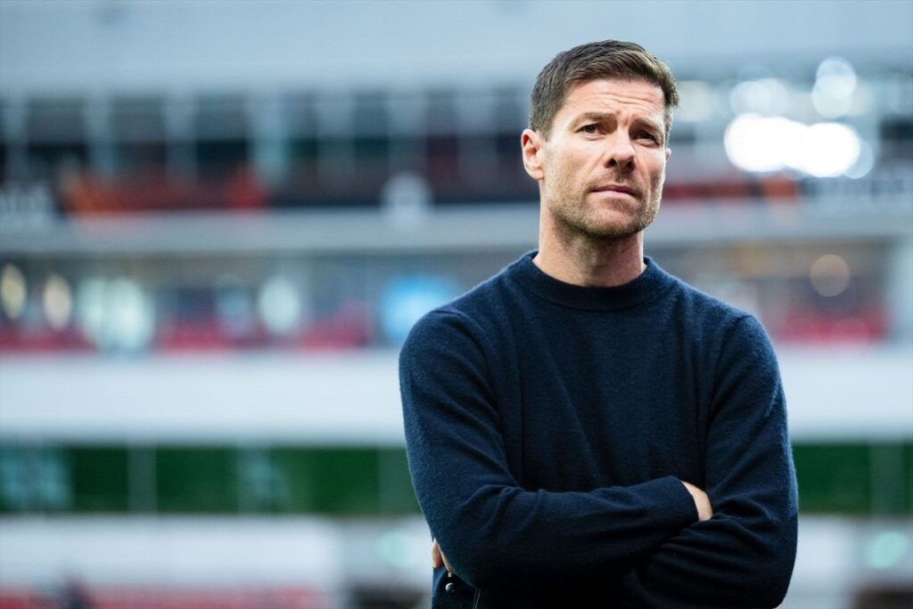

Kylian soulier d'or!
Kylian Mbappé a remporté le Soulier d'Or 2024-2025, devenant le meilleur buteur européen avec 31 buts en Liga, malgré des débuts difficiles et une saison collectivement mitigée pour le Real Madrid. Arrivé au Real Madrid à l'été 2024, Mbappé a connu des débuts compliqués, peinant à s'intégrer dans le système de jeu et à trouver une entente avec ses coéquipiers, notamment Vinícius Jr.
Malgré ces difficultés initiales, Mbappé a progressivement trouvé ses marques, enchaînant les performances de haut niveau. Il a terminé la saison avec 43 buts toutes compétitions confondues, devenant le meilleur buteur de la Liga et remportant le trophée Pichichi.
Une saison contrastée pour le Real Madrid
Si Kylian Mbappé a éclaboussé la saison de son talent sur le plan individuel, le Real Madrid, lui, a traversé une campagne 2024-2025 en demi-teinte sur le plan collectif. L'équipe merengue, habituée à se battre pour tous les trophées, termine la saison sans le moindre titre majeur, une anomalie pour un club de cette envergure. En Liga, les hommes de Carlo Ancelotti ont manqué de constance, lâchant des points précieux face à des adversaires abordables. Le collectif a souvent semblé déséquilibré, avec une dépendance offensive trop marquée sur les exploits de Mbappé et Vinícius, et une défense parfois friable dans les moments décisifs.
Une reconnaissance méritée
Malgré les performances collectives en demi-teinte, Mbappé a été élu meilleur joueur de la saison par les supporters du Real Madrid, témoignant de son impact et de son importance au sein de l'équipe. Ce Soulier d'Or vient récompenser la persévérance et le talent de Mbappé, qui a su surmonter les obstacles pour s'imposer comme l'un des meilleurs attaquants du monde.

Xabi Alonso de retour à la maison
Xabi Alonso a officiellement pris les rênes du Real Madrid le 26 mai 2025, succédant à Carlo Ancelotti. Ancien joueur emblématique du club, Alonso revient avec l'ambition de redéfinir l'identité tactique de l'équipe tout en s'appuyant sur l'héritage de son prédécesseur. Fort de son expérience réussie à la tête du Bayer Leverkusen, où il a mené l'équipe à un titre de Bundesliga invaincue et une victoire en Coupe d'Allemagne, Alonso apporte une approche tactique innovante au Real Madrid. Il envisage une équipe proactive et équilibrée, mettant l'accent sur le dynamisme, l'énergie et l'ambition collective. Son objectif est de permettre aux talents individuels, tels que Jude Bellingham, Kylian Mbappé, Vinícius Júnior ou encore Rodrygo, de s'épanouir pleinement dans un système structuré.
Alonso a exprimé son intention de suivre les traces d'Ancelotti, tout en insufflant sa propre philosophie de jeu. Il prévoit d'implémenter un style de jeu adaptable et émotionnellement engageant, axé sur la maximisation des performances des joueurs clés. Cette approche vise à maintenir la compétitivité de l'équipe tout en introduisant de nouvelles dynamiques tactiques.
Défis et perspectives
Le principal défi d'Alonso sera de tirer le meilleur parti d'un effectif riche en individualités, en imposant de l'ordre sans autoritarisme. Il devra également s'adapter à un environnement où la pression médiatique et les attentes des supporters sont élevées, avec peu de marge pour l'erreur. Son premier grand test sera le Mondial des clubs, une opportunité de mettre en pratique ses idées tactiques et de commencer à façonner son Real Madrid. Avec intelligence, ambition et sérénité, Alonso semble prêt à relever les défis inhérents au banc madrilène.